What a porphyry deposit is
A deposit is a deposit: metals carried out of a cooling intrusion by its own fluid and dumped in and around it. Like any deposit it needs five things: a source of metals, a way to transport them, a way to concentrate them, a way to deposit them, and a post-depositional history that preserves them. slide 2
The porphyry sits at the centre of a much bigger system. A few kilometres up are epithermal veins (Lecture 14); in limestone next to the intrusion you get Cu-Au-Fe skarns, and further out Pb-Zn-Ag skarns and veins, sometimes tens of kilometres away, all from the same magma. slide 3 (after Corbett, 2008) lecture recording, 9 Oct
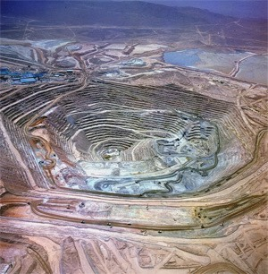
Porphyry Cu-Au deposits are by far the world’s largest producer and resource of copper and a significant one for gold, and porphyry Mo deposits are the world’s largest source of molybdenum. Many are over 500 Mt, some over 1000 Mt, but the grades are low: generally 0.1 to 0.5% Cu, about 0.3 g/t Au and up to about 0.5% Mo. All of them have distinctive, regional-scale alteration zones, which makes them easier to explore for than you might think. slide 5
Low grade only works at enormous scale. A new porphyry mine on the Argentina-Chile border is costing about $10 billion before any rock is mined, including a 150 km railway. Companies like BHP and Rio Tinto accept that because a porphyry runs for decades, long enough that metal price swings average out. lecture recording, 9 Oct
- Porphyry Cu-Au: the world’s largest source of Cu, significant Au. Porphyry Mo: the largest source of Mo.
- Huge (many >500 Mt, some >1000 Mt) and low grade (0.1 to 0.5% Cu, ~0.3 g/t Au).
- Distinctive regional-scale alteration zoning.
Size, grade and the giants
Many super-giants are actually several closely spaced mineralised stocks: Rio Blanco-Los Bronces and Escondida are clusters. Bingham (30 Mt Cu) and Resolution (24 Mt Cu) are exceptions, single zoned porphyries. There is no relationship between the volume of a porphyry and its copper. What matters is the earliest porphyry phase, which carries most of the metal; later phases and fluids just dilute it. slide 8
Grade can go higher in places. Magmatic-hydrothermal breccias focus Cu-rich fluid and can carry over 1% Cu: half of the mineralisation at Rio Blanco-Los Bronces is breccia-hosted. Ideally the copper arrives early, with high-temperature potassic alteration; later sericite or chlorite-sericite fluids can strip it out again. Skarns next to porphyries can be big too: Antamina in Peru has 17 Mt Cu. slide 9
Where the copper is
Contained Cu from slides 6 and 7; producers and reserves (USGS, thousand tonnes) from slide 14.
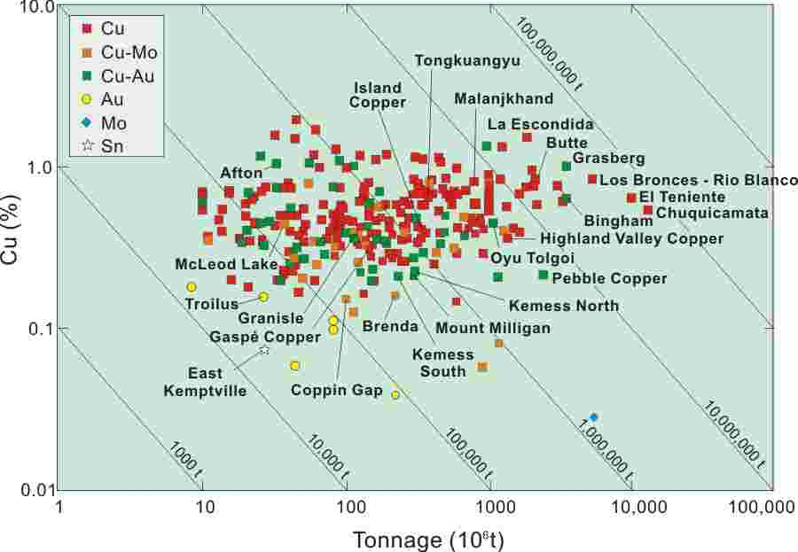
Porphyries were found in the 19th century but were too low grade to mine. Mass mining at Bingham Canyon began in 1906, first on the rich supergene blanket (chalcocite and covellite, up to four times the primary grade); primary ore came decades later. Today more than 50% of the world’s copper comes from about 100 porphyry mines, by huge open pits or underground block caving, as at Oyu Tolgoi in Mongolia. slides 11, 12 and 23 lecture recording, 9 Oct
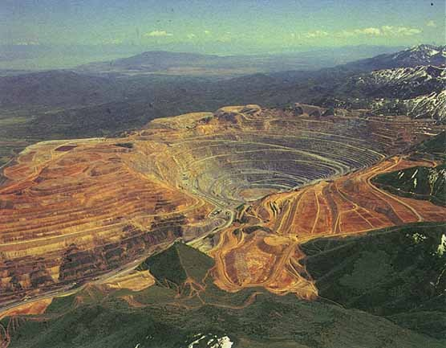
Australia produced about 730 kt of copper in 2025, far behind Chile’s 5300 kt, but holds the second-largest reserves (100 000 kt). Most of the big producers mine porphyries; the Congo and Zambia are the exception, with sediment-hosted copper. slide 14 lecture recording, 9 Oct
Arcs, slabs and oxidised magma
Porphyries form in magmatic arcs above subduction zones, in lines parallel to the volcanoes and slightly older than them. The subducting oceanic crust is hydrated, and as it heats, amphibole and serpentine break down and release fluid into the mantle wedge above. That fluid is rich in Cl, S, large-ion lithophile elements (Rb, K, Cs, Ba, Sr), Li, B, Pb, As, Sb, Cu and Au, and it is oxidising (2FeO + H₂O = Fe₂O₃ + H₂). It lowers the melting point of the wedge, which partially melts. slides 17 and 18 lecture recording, 9 Oct
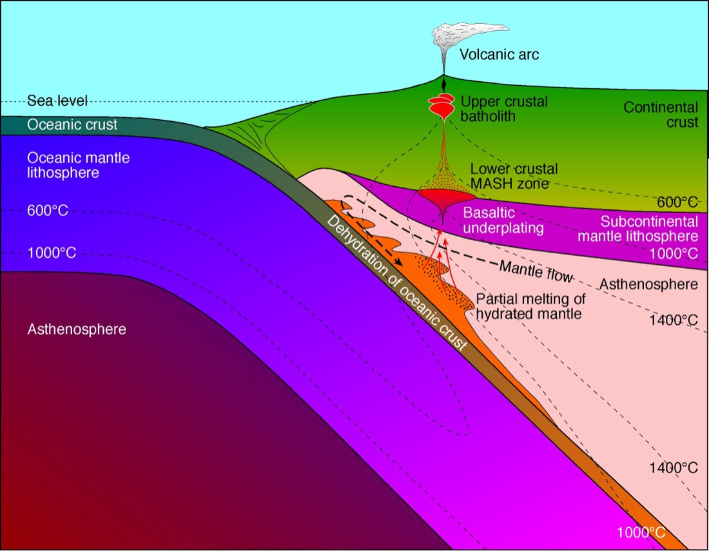
The basalt melt ponds at the base of the crust in a : Melting of crustal rocks, Assimilation, Storage and Homogenisation into a hybrid calc-alkaline magma. The porphyry magmas come from there. And the key property is oxidation: porphyry Cu-Au magmas sit near the hematite-magnetite buffer, at 400 to 800 °C or more, whereas porphyry Sn-W magmas are reduced (pyrrhotite field) at about 400 to 550 °C. Oxidised magmas keep sulphur as sulphate rather than sulphide, so Cu and Au aren’t trapped in early sulphide and stay in the melt to be carried off by fluid. slides 19 and 49 (Hedenquist and Richards, 1998) lecture recording, 9 Oct
Which porphyry will this magma make?
Schematic fields after the Blevin diagram on slide 41 and the oxidation plot on slide 19; boundaries are approximate.
The host intrusions
Porphyry hosts are intermediate to felsic I-type intrusions: granodiorite, tonalite, quartz monzodiorite and diorite, not true granites. I-type means they came from igneous source rock, not melted sediment. In island arcs they come from the upper mantle or recycled oceanic crust; in continental arcs they show crustal contamination. Multiple intrusions are the rule, and the mineralising one is usually late in the suite. slide 22 lecture recording, 9 Oct
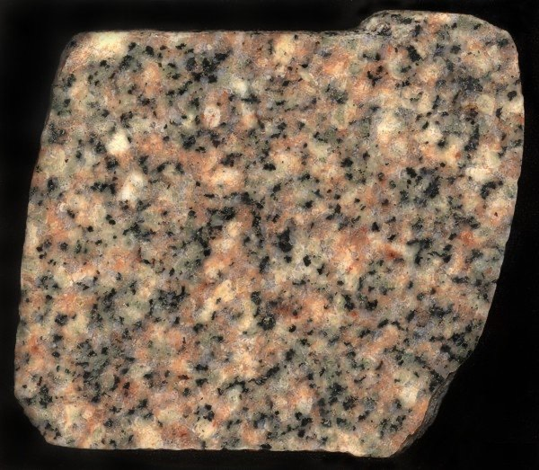
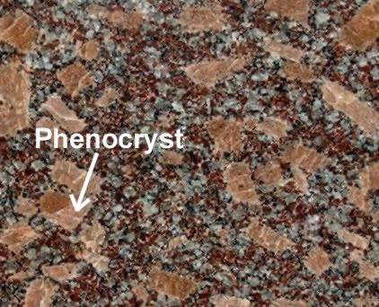
Compare the grain size in A and B. Which texture gives porphyry deposits their name, and what does it tell you about how that magma cooled?
Show what I see
- A: evenly coarse grained, all crystals about the same size: pink K-feldspar, white plagioclase and quartz, black biotite or hornblende. An equigranular granitoid such as granodiorite.
- B: large, well-formed feldspar crystals (phenocrysts) in a much finer groundmass.
So B shows porphyritic texture, which gives the deposits their name. Two cooling rates: crystals grew slowly at depth, then the magma rose to a shallow level and the rest crystallised fast. That shallow, high-level emplacement is exactly where porphyry deposits form.
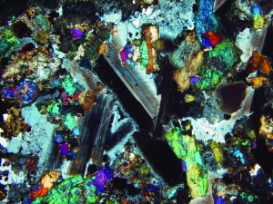
The Lowell and Guilbert shells
An orebody is an inverted cup or cylinder, 0.5 to 2 km tall and 0.1 to 2 km across: a large permeable zone of fracturing, often near the margin of the intrusion and along a prominent fault. The ore sits as disseminations, as a of irregular quartz-sulphide veinlets (the main ore in most deposits), as larger linear veins and as breccias. slide 24
Lowell and Guilbert’s classic model zones it in shells. In the middle is a barren or low-grade core with magnetite and little sulphide. Around it is the ore shell: 1 to 3% sulphide, more chalcopyrite than pyrite, with molybdenite. Outside that is the pyrite shell, about 10% pyrite and almost no chalcopyrite. Furthest out are sparse peripheral veins of Pb, Zn, Ag and Au. So the centre of the porphyry is not where you mine; the ore is on its margins. slides 24 and 50 lecture recording, 9 Oct
| Alteration | Present? | Assemblage | Where |
|---|---|---|---|
| Always | K-feldspar, biotite, rutile, pyrite or magnetite | The core, with the ore shell | |
| Not always | Silica, sericite, chlorite, rutile, pyrite | The flanks: the pyrite shell | |
| Argillic | Not always | Clay, sericite, chlorite, pyrite; plagioclase destroyed, K-feldspar intact | Above, can overprint potassic |
| Always | Albite or oligoclase, epidote or calcite, chlorite, magnetite or pyrite | The outer halo |
slides 50 and 51; lecture recording, 9 Oct
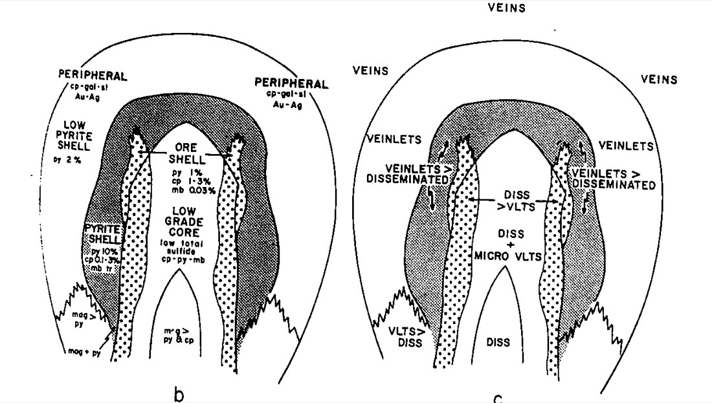
Go back to the drilling game at the top and use the shells: lots of pyrite means you’re outside the ore; K-feldspar and magnetite with little copper means you’ve gone through the middle. Real deposits don’t always show every shell, because phyllic and argillic zones aren’t always present. slide 51
Reading the veins
Gustafson and Hunt (1975) named porphyry vein types at El Salvador in Chile. Industry still uses the scheme, even though it came from one deposit. Learn the four. slides 25 to 30
| Vein | Look | Contents | Halo |
|---|---|---|---|
| EB (early biotite) | Deep, earliest, with or before A | Mostly biotite, some quartz, K-feldspar, anhydrite, actinolite; ± magnetite, sulphide | Can go with biotite breccias |
| A | Earliest quartz veins: irregular, discontinuous, 1 to 25 mm | Fine, even-grained (“sugary”) quartz-K-feldspar-anhydrite; minor chalcopyrite, bornite | K-feldspar |
| B | Regular, continuous, planar, 5 to 50 mm | Coarse quartz grown perpendicular to the walls, often with a centre line; coarse molybdenite, chalcopyrite, bornite | None. Carry the bulk of the ore, often as sheeted veins |
| D | Cut everything, continuous, 1 to 75 mm | Mostly sulphide (pyrite) and anhydrite, little quartz; chalcopyrite, bornite, enargite, tennantite, sphalerite, galena | Sericite or sericite-chlorite; feldspar destroyed |
slides 26 to 29
Name the vein0 / 4
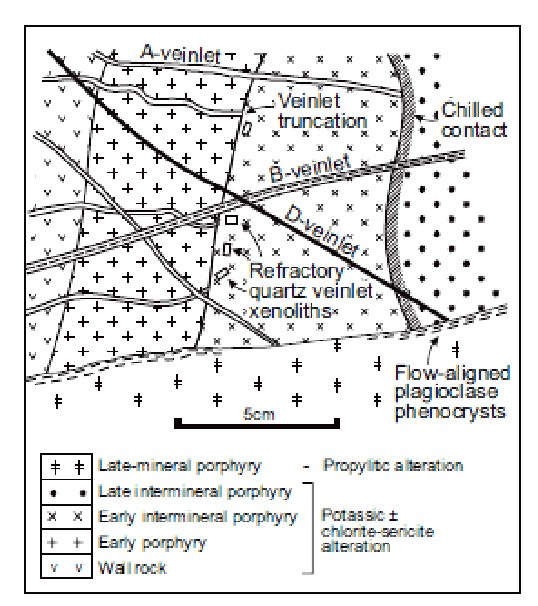
Because the scheme came from one deposit and B veins aren’t everywhere, many academics prefer Seedorff and others (2005), who classify veins by their mineralogy and alteration halo, from oldest to youngest: potassic veins (magnetite, biotite, then sugary quartz A veins), sodic or calcic veins, quartz veins with no halo (including banded quartz-molybdenite), veins with strong hydrolytic (sericitic or greisen) halos, and finally late, low-temperature or distal veins. slides 31 and 32
- The lab ore suites include Bingham Canyon, Ok Tedi and Goonumbla (Endeavour) in NSW. Bingham has good B veins with molybdenite and EB (biotite) veins.
- A vein: sugary quartz with a K-feldspar halo. B vein: planar quartz with a centre line, no halo, coarse molybdenite and chalcopyrite. D vein: pyrite-rich with a bleached sericite halo.
- Primary ore minerals: pyrite, chalcopyrite, bornite, enargite, magnetite, molybdenite; supergene chalcocite and covellite; oxide malachite and cuprite.
Alteration in the hand
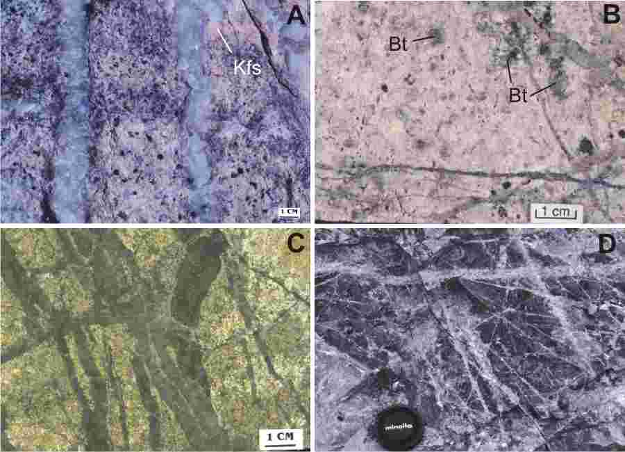
In A and B, what colour is the K-feldspar, and what dark mineral is growing in B? Why does that colour hint at an oxidised magma?
Show what I see
- A: K-feldspar (Kfs) alteration along the margins of quartz veins, at Bethsaida, British Columbia.
- B: pervasive pink K-feldspar with patches of fine hydrothermal biotite (Bt), with quartz-molybdenite veinlets, at Red Mountain, Yukon.
So this is potassic alteration, always present in the core. The K-feldspar is strongly pink because it holds iron, a sign of an oxidised system. In many porphyries you won’t see much K-feldspar; secondary biotite is the commoner sign of potassic alteration. slide 52 lecture recording, 9 Oct
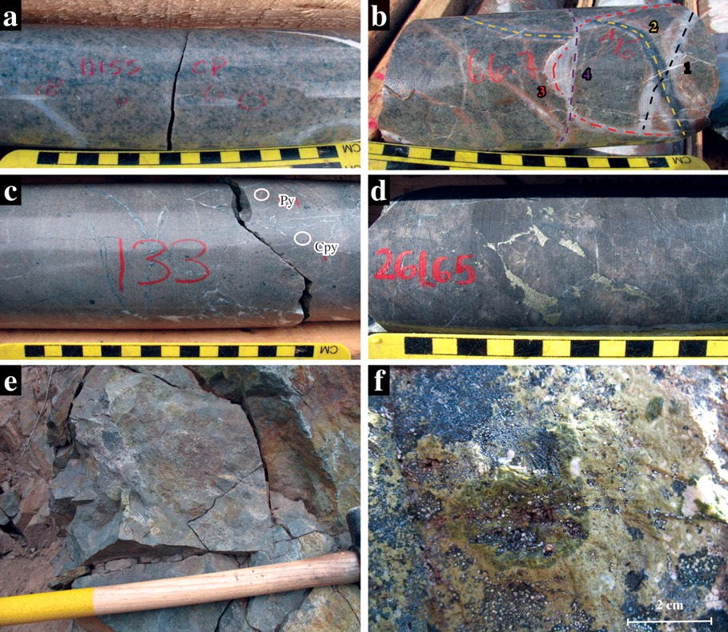
Look at f, the yellow-green radiating mineral. What is it, and which alteration zone has it put you in?
Show what I see
- Cores and outcrop are green-grey: chlorite.
- f: a coarse, radiating, pistachio-green mass forming a nodule in an altered volcanic clast: epidote.
So you’re in the propylitic zone: chlorite, epidote, albite, calcite, with magnetite or pyrite. It is always present and marks the outer halo; the first epidote marks the start of the propylitic zone. These are from Schaft Creek, BC. slide 53 (Scott et al., 2008)
Phyllic and argillic alteration matter for grade as much as for vectoring: the sericite and chlorite-sericite fluids that come late can leach copper back out, because copper becomes mobile under those acidic conditions. slide 9 lecture recording, 9 Oct
Which alteration?0 / 4
UST textures, Sr/Y and magnetics
(USTs) are banded, comb-like layers in the cupola, the domed top of an intrusion. Oriented quartz, feldspar, mica, amphibole, tourmaline and apatite crystals grow downward into the intrusion, often coarse or pegmatitic. They act as chemical and physical barriers to circulating fluid, so finding them is a vector: porphyry Cu-Au ore can sit 100 to 200 m above the UST zone. They form in open systems (fluid released by fracturing after each layer) or closed ones (fluid trapped as they crystallise), and not every porphyry has them. slides 33 to 35 (Müller et al., 2023)
Check this one: the slide says ore may lie 100 to 200 m above the UST zone, the recording says about 1000 m. The page follows the slide.
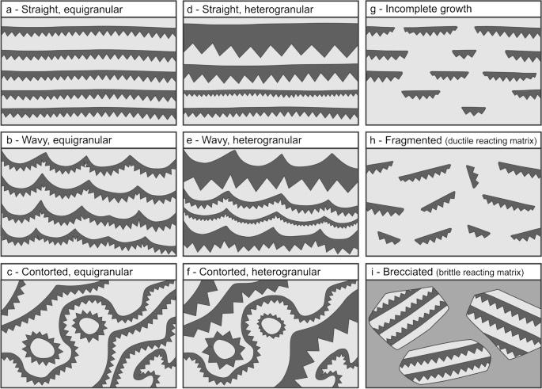
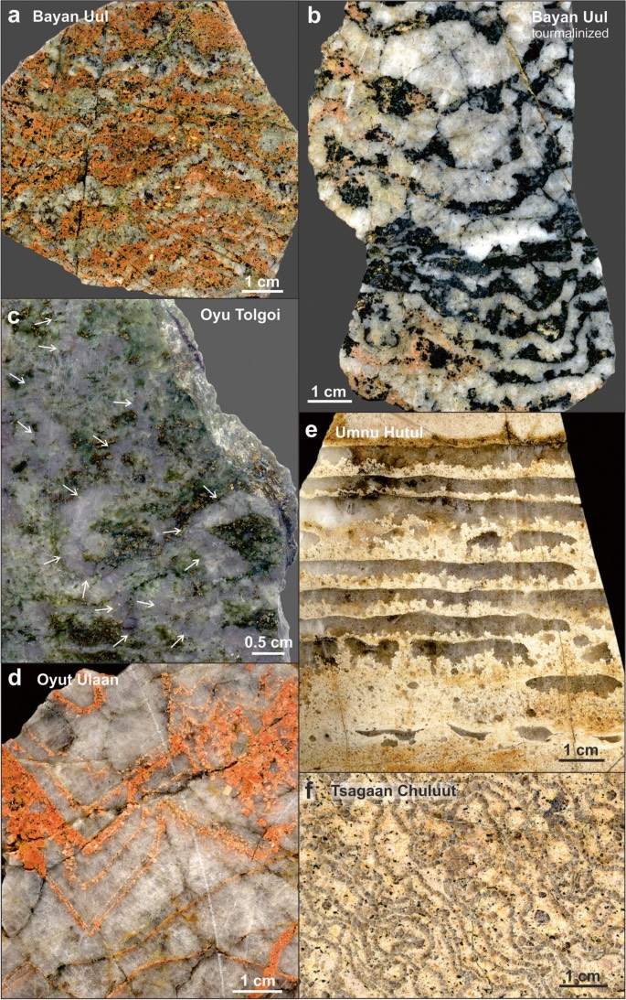
In e (Umnu Hutul), the grey quartz crystals grow from one side of each band. Which way was the top of the intrusion?
Show what I see
- e: repeated pale bands, each with a flat side and grey quartz combs whose points all face the same way.
- a, b, d: wavy to contorted banding; b is tourmalinised.
So USTs grow downward into the magma from the roof: the flat side each layer grows from is up, toward the cupola, and the crystal tips point down. The straight and wavy types make that easy to read; contorted or brecciated ones are much harder. slides 33 to 35 lecture recording, 9 Oct
Geochemistry helps too, cheaply, with XRF. Fertile porphyry magmas are hydrous, rich in H₂O, SO₃ and Cl. Extra water suppresses plagioclase, which holds Sr, in favour of hornblende, which takes Y. So fertile magmas have high Sr/Y at a given SiO₂ compared with barren arc rocks. slide 36 (Rohrlach and Loucks, 2005)
Fertile or barren?0 / 4
Invented sample values for practice; the principle (high Sr/Y = fertile) is from slide 36.
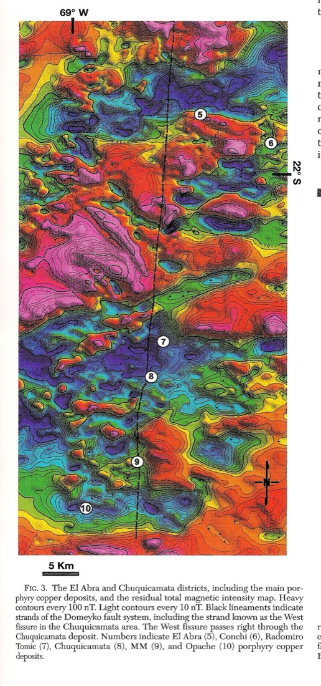
Chuquicamata and El Abra both sit on magnetic lows. Porphyry magmas are oxidised and rich in magnetite, so why a low?
Show what I see
- Reds are magnetic highs, blues and purples lows; the deposits (circles) sit along a fault on lows.
So hydrothermal fluid passing through destroyed the primary magnetite and demagnetised the rock. You want a porphyry that started magnetite-rich and was then flushed by lots of fluid, because the fluid brought the metal. A magnetic low inside a magnetic intrusion is a target. slide 21 (Behn et al., 2001) lecture recording, 9 Oct
Carapace, hydrofracturing and fluids
A porphyry magma starts at about 1000 °C with 3 to 5% water. As it crystallises, the water can’t stay in the crystals, so it concentrates in the last melt at the top and margins: a water-saturated . Pressure builds until the brittle rock above fails: hydrofracturing makes the stockwork, and breccia pipes and dykes punch upward. Step through it. slides 46 to 48 lecture recording, 9 Oct
Crystallise the stockstep 1 of 4
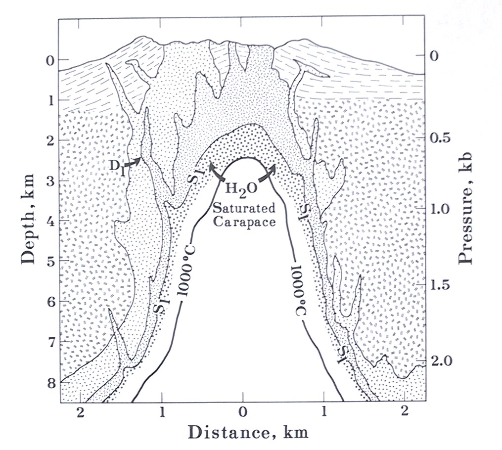
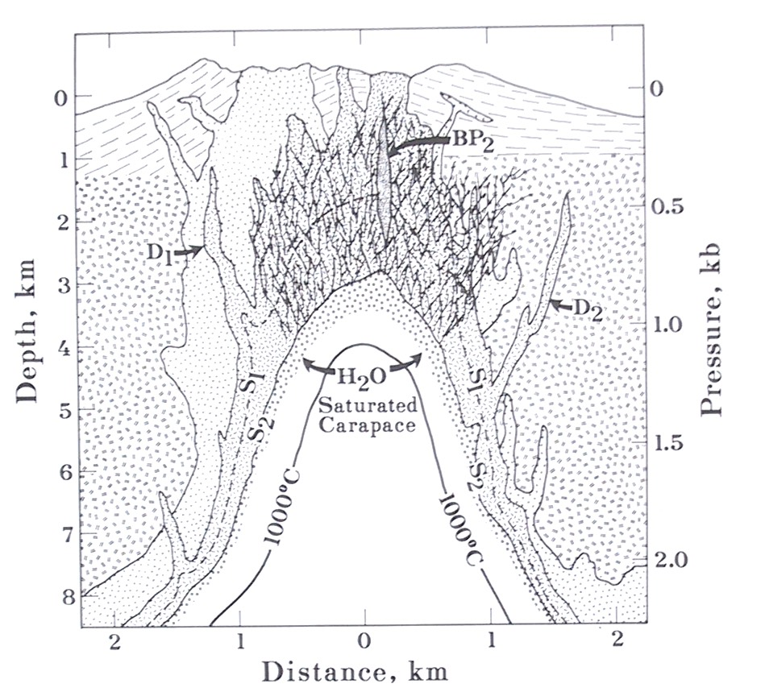
The fluids are metal- and salt-rich brines, between about 250 and 750 °C, with very variable mixtures of magmatic and meteoric water. Sulphur isotopes in pyrite and chalcopyrite are often magmatic, while later sulphate is often meteoric. The evidence that the metals are magmatic is indirect. Meteoric water drawn in around the stock mixes with magmatic fluid and drives the pervasive sericitic alteration with disseminated sulphide; above the system you can get acid-sulphate alteration and alkaline hot springs. slides 43 and 45 lecture recording, 9 Oct
Porphyry Mo and Climax
Porphyry Mo deposits share most features with Cu-Au porphyries but come from more reduced, more fractionated magmas. There are three subclasses by host: granitic (biotite granite and granodiorite, Cu-poor, like Endako in BC), trondhjemite (unusual, not very silicic, like Trout Lake in BC), and rhyolitic porphyry (subvolcanic rhyolite dykes and sills, like Climax in Colorado). slide 38
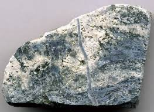
This is ore. What would you look for to see the molybdenum?
Show what I see
- A pale, quartz-rich rock (silicified rhyolite porphyry) with dark grey streaks and a thin quartz vein.
So look for soft, lead-grey to bluish, platy molybdenite in the veinlets and disseminated through the rock. Ore is mostly stockwork veins with minor disseminations, at only 0.1 to 0.45% MoS₂, so you won’t see much. Tonnages run from 50 to 1500 Mt, mined by open cut, stoping and block caving, mostly in western North America (and now Tibet). slide 40 lecture recording, 9 Oct
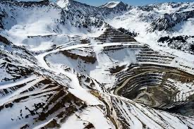
A plot of oxidation (Fe₂O₃/FeO) against fractionation (Rb/Sr) separates the porphyry types: Cu-Au from oxidised, little-fractionated magmas; Mo from more fractionated ones; Sn-W from reduced, highly fractionated ones. Phil Blevin applied it to New South Wales: every NSW porphyry plots as oxidised and little fractionated, so in NSW you’re exploring for Cu-Au, not Mo or Sn. That’s the slider back in section 3. slide 41 lecture recording, 9 Oct
Why the Andes
Stress decides how magma behaves. Tension lets primitive magma rise fast up extensional faults and erupt. Compression stops it rising, which builds a big MASH zone and lower-crustal reservoir. Shear is ideal: local extensional faults and pull-apart basins focus magma and fluid into high-level stocks. slide 49 (Richards, 2004)
Which stress regime?0 / 3
The largest porphyries form in contractional settings of three kinds: flat-slab subduction from fast plate motion; subduction of young, buoyant seamounts, ridges or oceanic plateaus, which also flattens the slab; and accretion of exotic terranes. The central Andes are the biggest copper region on Earth (985 Mt contained Cu) for four reasons: they sit in the middle of the orogen where shortening and oroclinal bending peak; the Juan Fernandez ridge was subducted; copper-forming episodes repeated from the Late Carboniferous to the Pliocene, suggesting copper-rich crust to start with; and they are young (Cenozoic), so not yet eroded. slides 54 to 57
Preservation is the catch. Porphyries form high in rising mountain belts, so they erode fast. Palaeozoic porphyries are uncommon worldwide, which makes the Lachlan Orogen porphyries of central NSW unusual, and a few Proterozoic deposits have been interpreted as porphyries. slide 37 lecture recording, 9 Oct
Put it together. Slab fluids hydrate and oxidise the mantle wedge, adding S, Cl and C. Hydrous basalt rises and modifies the lower crust. Copper comes mainly from the subducted oceanic crust, which holds more than continental crust (plus subducted VMS deposits, manganese nodules and pelagic sediment). Translithospheric faults focus magma upward. Flat subduction can enrich the lower crust and lithospheric mantle, which later melts. And fresh mafic melt injected into mid-crustal chambers makes the hybrid magma that forms the deposit. slides 58 to 60
- Oxidised, hydrous, I-type intermediate magma from a MASH zone; shear (pull-apart) is the ideal stress regime.
- Giants form in contractional settings: flat slab, ridge or seamount subduction, terrane accretion.
- Central Andes: maximum shortening, Juan Fernandez ridge, repeated episodes, young and preserved.
Self-test
Answer out loud or on paper before you open each one. Claim the ounces if you got it.
Glossary and flashcards
Terms this lecture assumes or defines quickly. The dotted words in the text open them in place.
Flashcards
Where this goes next
Lecture 12 starts gold week. The epithermal veins sitting above porphyries come in Lecture 14, and the supergene blanket that made the first porphyry mines pay is the weathering story from Lecture 2.